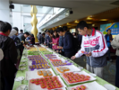

COSA活動記錄簿
留下COSA所辦活動之紀錄
首頁
相簿目錄
::
最新上傳
::
最新留言
::
熱門圖片
::
最高評分
最新上傳
211 次觀看
十二月 14, 2012
213 次觀看
十二月 14, 2012
180 次觀看
十二月 14, 2012
190 次觀看
十二月 14, 2012
204 次觀看
十二月 14, 2012
149 次觀看
十二月 14, 2012
162 次觀看
十二月 14, 2012
133 次觀看
十二月 14, 2012
162 次觀看
十二月 14, 2012
172 次觀看
十二月 14, 2012

155 次觀看
十二月 14, 2012
152 次觀看
十二月 14, 2012
752 張圖片，共 63 頁
1
2
3
4
5
6
7
8
9
10
11
63